Activity: Using Solution Manager (scenario 1)
In this activity, you extend the part 20 mm in the X direction. All of the red faces move as a rigid set.
Click here to download the activity file.
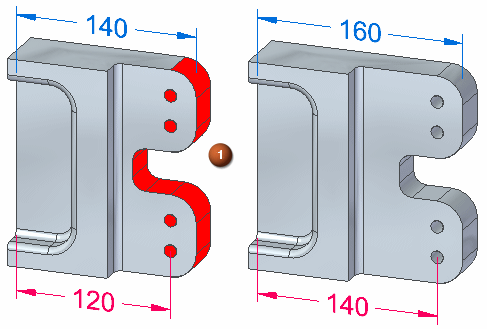
The four holes are aligned using an Aligned Holes relationship. The outside cylindrical faces are concentric to the holes.
-
Open solution_manager_scenario1.par.
On the Advanced Design Intent panel, click the Restore button (4) to restore default settings. Auto Preview (5) should not be checked.
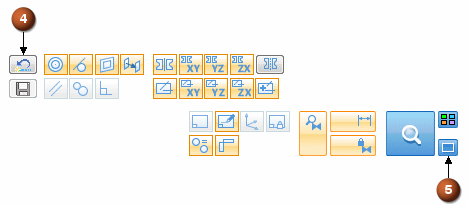
For this activity, turn on the Lock to Base Reference (1) Design Intent. This will lock face (2) to the YZ reference plane.
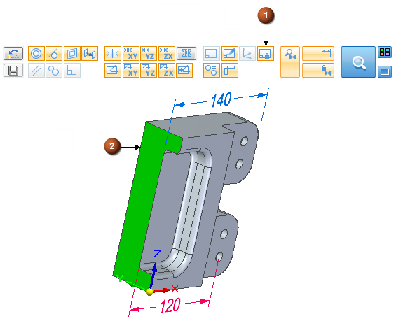
Select the two faces shown.
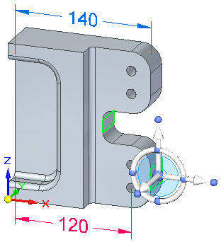
Start the synchronous edit by clicking the axis shown.
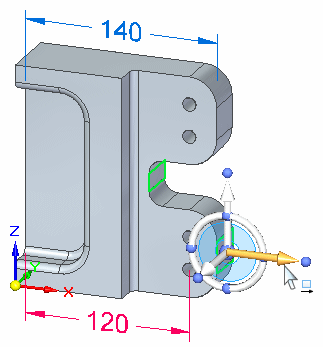
In the dynamic edit box type 20 and press Enter.
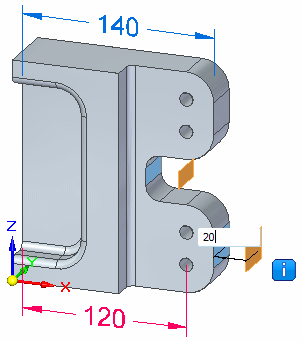
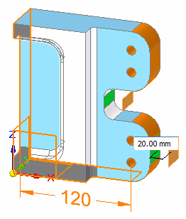
Notice that the fail symbol  displays. This symbol is an alert that the solution is in a failed condition. When
a failed condition occurs, you are placed in the Solution Manager mode. When in Solution Manager mode, the Solution Manager button changes from a magnifying glass to a check mark.
displays. This symbol is an alert that the solution is in a failed condition. When
a failed condition occurs, you are placed in the Solution Manager mode. When in Solution Manager mode, the Solution Manager button changes from a magnifying glass to a check mark.
Notice the face color changes.
-
Orange
Faces failing to move
-
Green
Select set faces
-
Blue
Faces participating in the edit
-
Transparent
Faces not involved in the edit
-
Black
Grounded faces
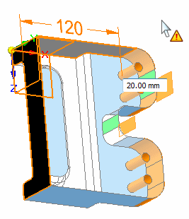
You can right-click on any colored face to display a palette of relationships applied to the face.
Pausing over a colored face displays a tool tip with the solve status.
Pause over the face shown to display the tool tip.
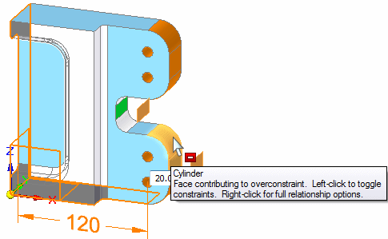
Right-click the cylindrical face shown to display the relationships palette (1). The relationships with a yellow triangle are the relationships that are involved in the failed solution.
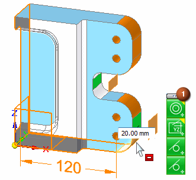
You can relax an over constrained relationship to allow an edit to solve. Your intended solution dictates what relationships to relax. In this example, the 120 dimension is locked. This causes the edit to fail.
You can relax the locked dimension in three ways.
-
Right-click the cylindrical face (2) that the locked dimension is applied to. On the relationships palette, click the dimension constraint (3). The dimension constraint on the palette turns gray to denote it is relaxed. The edit solves.
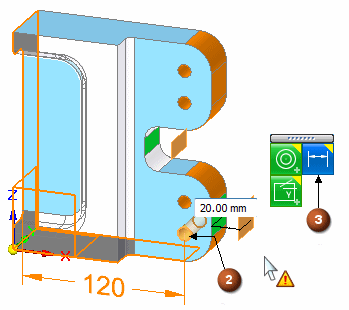
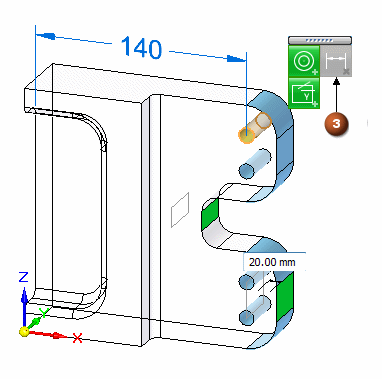
-
Click the dimension and it temporarily relaxes to complete the edit. When the edit is complete, the dimension automatically returns to a locked condition.
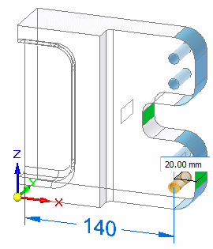
To complete the edit, click the Solution Manager green check mark.
-
On the Advanced Design Intent panel, click the Relax Dimensions button. This relaxes all locked dimension in the model. The edit solves and when the edit is complete, the Relax Dimensions button returns to original setting.
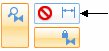
-
Choose one of the relax relationship methods to complete the edit. Remember, to complete the edit you click the Solution Manager green check mark.
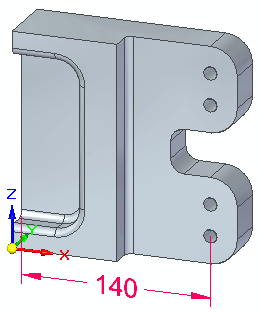